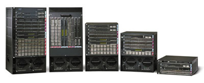

Олег Типисов,
инструктор Учебного центра REDCENTER
ovt@redcenter.ru
Статья подготовлена по материалам семинара, организованного учебным центром REDCENTER (http://www.redcenter.ru) на выставке "Связь-Экспокомм-2003".
Говоря о многочисленных продуктах корпорации Cisco Systems (http://www.cisco.com), имеющих отношение к обеспечению безопасности, в первую очередь стоит, пожалуй, упомянуть известные межсетевые экраны PIX Firewall и IOS Firewall, а также не менее известные коммутаторы семейства Catalyst. Не следует забывать и о системе обнаружения сетевых атак на базе сенсоров серии 4200, а также о средствах предотвращения атак на серверы и ПК - Cisco Security Agent. С защитой информации тесно связано и разнообразное ПО, входящее в пакет CiscoWorks VPN/Security Management Solution (VMS), которое предназначено для конфигурирования перечисленных выше систем, управления ими и мониторинга, и сервер аутентификации авторизации и учета Cisco Secure Access Control Server. Нельзя обойти вниманием и решения для организации виртуальных частных сетей (VPN), которые базируются на маршрутизаторах Cisco, концентраторах VPN серии 3000, а также программных клиентах VPN и аппаратных клиентских шлюзах VPN 3002. В таком многообразии нетрудно и заблудиться, поэтому в данном обзоре мы постараемся дать краткую характеристику большей части перечисленных продуктов, а заодно ответить на наиболее часто задаваемые пользователями вопросы (например, "чем PIX Firewall отличается от IOS Firewall?").
Многие из продуктов Cisco ориентированы на защиту от внешних угроз, но, по последним оценкам аналитиков отрасли, до 70% всех угроз исходят от внутренних пользователей. И здесь большую роль в деле защиты информации начинают играть коммутаторы второго и третьего уровней, применяемые в кампусных сетях и обладающие развитыми средствами обеспечения безопасности.
Коммутаторы Catalyst
В стандартный комплект поставки коммутаторов Catalyst серии 6000/6500 входит специальное ПО, поддерживающее списки контроля доступа (IP ACL) для маршрутизируемого и коммутируемого трафика, а также контроль MAC-адресов и различные механизмы защиты протокола Spanning Tree. Изоляция пользователей друг от друга достигается путем создания традиционных виртуальных локальных сетей (VLAN) и с помощью механизма частных VLAN (PVLAN). PVLAN позволяет организовать изолированную работу достаточно большого числа пользователей без выделения каждому из них отдельных VLAN. С помощью этого же механизма можно объединять пользователей в группы (community), в пределах которых организуется их "выделенное" общение. При этом и изолированные пользователи, и группы могут передавать свой трафик в так называемые публичные (promiscuous) порты.
|  |
| Семейство коммутаторов Catalyst 6500.
|
Из последних нововведений для коммутаторов серии 6000/6500 следует отметить также механизм ARP Inspection, появившийся в версии CatOS 7.5. Он обеспечивает защиту от атак, основанных на подмене содержимого ARP-таблиц (ARP spoofing). Данный механизм предусматривает запись в коммутатор 6000/6500 таблицы соответствий между IP- и MAC-адресами и анализ сообщений протокола ARP.
Кроме того, в конце августа 2002 г. для Catalyst 6500 были анонсированы два новых модуля - Firewall Services Module (FWSM) и IPSec VPN Services Module стоимостью примерно по 35 тыс. долл. каждый. Первый из них по сути представляет собой PIX Firewall (более мощный, чем модель PIX 535), выполненный в конструктиве одной платы, оснащенной процессором Pentium III 1 ГГц и RAM объемом 1 Гбайт. Среди заявленных характеристик модуля - пропускная способность 5 Гбит/с, поддержка 1 млн соединений одновременно, возможность устанавливать соединения со скоростью до 100 тыс. в секунду. FWSM не имеет своих собственных физических портов и подключается к шине или матрице коммутации Catalyst 6500 через логический транковый канал 802.1Q с пропускной способностью 6 Гбит/с. Модуль обеспечивает фильтрацию трафика, передаваемого между VLAN, число которых может достигать 100. Устройство оснащено специальной версией операционной системы PIX OS, которая функционально соответствует версии PIX OS 6.0, но отличается дополнительными возможностями, реализованными в версиях 6.2 и 6.3. В частности, поддерживается протокол маршрутизации OSPF, что принципиально важно, поскольку путь пользовательского трафика целиком определяется состоянием нескольких таблиц маршрутизации (пограничного маршрутизатора, модуля FWSM, внутреннего маршрутизатора Catalyst 6500 и др.), а также настройками шлюза по умолчанию на компьютере пользователя. Иными словами, в зависимости от настройки маршрутизации трафик может либо миновать маршрутизаторы (включая модуль FWSM), либо пройти через каждый из них, - это обеспечивает высокую гибкость. Задача же собственно коммутатора Catalyst 6500 в данном случае состоит в создании высокоскоростной среды, в которой "живут" передающие трафик маршрутизаторы.
Другой модуль, IPSec VPN Services Module, представляет собой специализированный ускоритель шифрования, или криптоакселератор. Его пропускная способность варьируется от 1,5 до 2 Гбит/с в зависимости от длины пакетов. Модуль не имеет собственных физических интерфейсов и подключается к шине или матрице коммутации Catalyst 6500 через два логических канала шириной в 1 Гбит/с каждый. IPSec VPN поддерживает такие алгоритмы шифрования и хеширования, как DES, 3DES, MD5 и SHA-1; к сожалению, AES в этот список не входит. В отличие от других подобных продуктов компании Cisco, данный модуль требует явного конфигурирования средствами основной ОС коммутатора Catalyst 6500.
Отметим также, что в одном шасси Catalyst 6500 нельзя одновременно установить модуль FWSM и модуль VPN - это ограничение обусловлено свойствами ОС.
Еще один модуль для Catalyst 6500 компания анонсировала в феврале 2003 г. Это сенсор обнаружения атак (NIDS), получивший название IDSM-2 Services Module и призванный заменить более старый модуль IDSM-1. Пропускная способность IDSM-2 по сравнению с предшествующей моделью выросла в 5 раз - до 600 Мбит/c (по производительности он занимает в "линейке" место между сенсорами IDS-4250 с 500 Мбит/c и IDS-4250-XL с 1 Гбит/c); стоимость устройства составляет около 30 тыс. долл. Выпуская данный модуль, Cisco преследовала важную цель - унифицировать ПО на всех своих NIDS-системах. И действительно, теперь на них работает специализированное ПО версии 4.0, содержащее массу интересных возможностей и вполне заслуживающее отдельной статьи.
Завершая раздел, отметим, что для удобства пользователей Cisco включила в свой прайс-лист несколько систем на базе трех- и шестислотовых моделей этих коммутаторов, специально сконфигурированных для обеспечения безопасности. Например, Catalyst 6503 Firewall Security System представляет собой коммутатор Catalyst 6503 с установленным управляющим модулем Supervisor 2, дочерней платой маршрутизации MSFC2, модулем FWSM и источником питания. Один оставшийся слот может быть использован для установки модуля Fast Ethernet или Gigabit Ethernet. Цена такого рода систем варьируется от 60 до 65 тыс. долл.
Cisco Security Agent
В апреле 2003 г. Cisco вместе с компанией OKENA (http://www.okena.com) приобрела и новый продукт - Security Agent. Это система защиты класса HIPS (Host Intrusion Prevention System), которая представляет собой по сути усовершенствованный персональный межсетевой экран. Security Agent заменит продукт IDS Host Sensor 2.5, поставлявшийся ранее по лицензии компании Entercept Security Technologies (http://www.entercept.com).
Отличие HIPS-систем от уже упоминавшихся систем класса NIDS заключается в способе обнаружения атак. Если системы NIDS пытаются обнаруживать атаки в основном по сигнатурам, т. е. на основе того, как выглядит тот или иной пакет (лишь иногда дополнительно привлекаются количественные характеристики трафика), то системы HIPS, встроенные в ядро ОС, перехватывают системные вызовы приложений. Они могут обнаруживать атаки, анализируя конкретные операции определенного приложения и проверяя, имеет ли данное приложение право на выполнение этого действия.
Агенты OKENA StormWatch устанавливаются на компьютеры и контролируют доступ приложений к ресурсам, причем под ресурсом может пониматься файл, ключ системного реестра, сетевой адрес, номер порта или COM-объект. Список разрешенных действий и контролируемых ресурсов для каждого приложения (профиль) формируется с помощью уникального механизма автоматического профилирования, а управление профилями осуществляется централизованно через консоль управления. Система поставляется с набором профилей для таких приложений, как Apache, Microsoft IIS, SQL Server, Microsoft Exchange, Sendmail и т. д. Кроме того, агент StormWatch способен обнаруживать атаки, вызванные переполнением буфера или подменой разделяемой библиотеки. Очевидно, что описанный подход, позволяющий защититься даже от новых, неизвестных атак, более надежен, чем схема, применяемая в NIDS-системах. StormWatch поддерживает платформы Windows и Solaris; версии агентов поставляются как для настольных систем, так и для серверов. Стоимость одной серверной лицензии - примерно 2000 долл.
Межсетевые экраны
Теперь поговорим о традиционных межсетевых экранах - аппаратно-программных комплексах PIX Firewall с ОС PIX OS (табл. 1) и специальной версии ОС для маршрутизаторов Cisco - IOS Firewall (в 2003 г. появились обновленные версии ОС для этих устройств, PIX OS 6.3 и IOS Firewall на базе IOS 12.2(15)T с новыми возможностями).
Таблица 1. Характеристики семейства PIX Firewall
| Продукт | Сегмент рынка | Макс. число интерфейсов | Производительность, Mбит/c |
| PIX 501 | SOHO | 2 | 10 |
| PIX 506E | ROBO | 2 | 20 |
| PIX 515E | SMB | 6 | 188 |
| PIX 525 | Enterprise | 8 | 330 |
| PIX 535 | Enterprise/ISP | 10 | 1700 |
Пользователи часто задают вопрос о различиях между IOS Firewall и PIX Firewall, поскольку изучение документации создает у них впечатление полной функциональной эквивалентности продуктов.
На самом деле наряду со сходством здесь имеются и различия. Действительно, определенные возможности (такие, как инспекция на уровне приложений, защита от атак SYN Flood, блокирование Java-апплетов, ограничение списка допустимых команд протокола SMTP, принудительная аутентификация пользователей, подсистема NIDS и т. д.) есть в списке функций обоих продуктов. Но реализованы они в каждом из экранов по-разному.
Есть и более существенные отличия. IOS Firewall проигрывает PIX по производительности и уровню обеспечиваемой безопасности, однако имеет преимущество в возможностях управления трафиком, таких, как принудительная маршрутизация (Policy Based Routing), NAT, Traffic Policing и Traffic Shaping. Попросту говоря, в PIX Firewall средства управления трафиком вообще отсутствуют.
Говоря об "уровне обеспечиваемой безопасности", следует пояснить этот термин. Дело в том, что к межсетевым экранам можно применить понятия fail-open и fail-closed, позаимствованные у систем класса NIDS. Для последних характеристика fail-open означает, что блокирование или вывод из строя NIDS-системы (например, посредством DoS-атаки) делает сеть открытой, а следовательно, незащищенной. Характеристика же fail-closed означает, что внутренняя сеть остается защищенной.
Разумеется, для межсетевых экранов данное определение применимо лишь с изменениями. "Выход из строя" в этом случае означает главным образом то, что программный код системы не может справиться с инспекцией легитимного (с точки зрения стандартов), хотя и несколько "необычно сформатированного" трафика. Необычность же легко достигается известными средствами, используемыми для обхода систем класса NIDS. Общий рецепт здесь прост: сегментировать трафик на транспортном уровне, фрагментировать его на сетевом уровне, добавить мусор по вкусу, перемешать и отправить. Для этого замечательно подходит, например, утилита fragroute Дуга Сонга (Dug Song).
Чтобы, например, отключить инспекцию на прикладном уровне в IOS Firewall (по крайней мере, для некоторых прикладных протоколов, например, SMTP), достаточно этот трафик фрагментировать, после чего для данной сессии IOS Firewall переходит в режим fail-open и, в случае SMTP, перестает анализировать передаваемые SMTP-команды. С PIX Firewall такого, как правило, не происходит. Этот экран продолжает работать в режиме fail-closed и не пропускает фрагментированные пакеты внутрь сети, если для них необходима инспекция на прикладном уровне. Правда, и здесь бывают исключения, поиск которых оставим пытливому читателю.
Справедливости ради необходимо отметить, что описанная проблема - это не только проблема IOS Firewall. Анализ сообщений прикладного уровня любым пакетным фильтром, как правило, ограничен пределами одного IP-пакета или даже фрагмента - он по определению не может быть надежным. Поэтому симптоматичен найденный в начале 2003 г. дефект в реализациях протокола SIP на PIX Firewall и маршрутизаторах Cisco (http://www.cisco.com/warp/public/707/cisco-sa-20030221-protos.shtml), приводящий к их перезагрузке. В частности, перезагрузку PIX Firewall вызывает получение фрагментированного сообщения SIP INVITE. В следующей версии PIX OS разработчики "решили" эту проблему, запретив фрагментированные сообщения SIP и перестав их обрабатывать. Отметим, что и PIX OS, и стандартная IOS маршрутизаторов позволяют администратору полностью заблокировать прием и обработку фрагментированных IP-пакетов. Однако не следует забывать о существовании других способов "фрагментации", осуществляемой на транспортном и прикладном уровнях, а также о том, что вето на фрагментацию может привести к блокированию легитимного трафика.
Добавление в межсетевой экран прокси-серверов для отдельных прикладных протоколов снимает описанную проблему, но создает новые. Разработчики прокси-сервера должны либо пойти на сознательное и резкое ограничение функциональности соответствующего прикладного протокола, либо по сути отказаться от безопасности. Представьте себе полнофункциональный "прокси" для протокола SMTP, например, программу Sendmail... Думаю, комментарии здесь излишни. А кто может гарантировать отсутствие ошибок или уязвимостей в самом прокси-сервере? Подобный прокси-сервер тем более опасен, если межсетевой экран реализован на основе ОС общего назначения, такой, как Windows или Unix.
У экранов PIX Firewall и IOS Firewall в этом отношении все обстоит благополучно, поскольку разработчики, исповедуя минималистский подход, реализовали их как динамические пакетные фильтры. Это гарантирует высокую устойчивость программного кода и сокращает число ошибок. В отличие от, скажем, Check Point FireWall-1, в данных экранах отсутствует функциональность прокси.
Теперь о новых возможностях PIX Firewall и IOS Firewall. В PIX это прежде всего поддержка инкапсуляции 802.1Q, позволяющая организовывать разграничение доступа между VLAN. Число поддерживаемых VLAN-интерфейсов определяется используемой лицензией и моделью, но даже для PIX 535 оно не превышает 20. В версии 6.3 PIX OS поддерживается протокол OSPF с возможностью перераспределения маршрутов между двумя процессами OSPF. Например, можно запустить один процесс OSPF на внешнем интерфейсе, а другой на внутреннем, организовав перенаправление из внешнего во внутренний, что предотвратит утечку информации о частных сетях во внешний мир.
Наконец-то появилась поддержка HTTPS-аутентификации для запросов HTTP и HTTPS, позволяющая организовать принудительную аутентификацию внутренних пользователей на межсетевом экране, избежав при этом передачи пароля в открытом виде. Стала возможной фильтрация исходящих запросов по протоколам HTTPS и FTP (раньше поддерживался только HTTP). Данную функцию обеспечивает замечательный продукт компании Websense (http://www.websense.com), который позволяет администратору запретить обращения сотрудников на определенные категории Web-сайтов в рабочее время, что, безусловно, влияет на продуктивность работы.
В версии 6.3 PIX OS стали поддерживаться практически все протоколы IP-телефонии, например, H.323 v3/v4, MGCP, SCCP (Skinny), SIP (поддерживается PAT), CTIQBE. Есть и множество мелких новшеств, таких, как поддержка функциональности DHCP Relay Agent, номера строк в ACL для более удобного их редактирования, улучшения в системе регистрации сообщений и т. д. Появилась также неограниченная лицензия для PIX 501.
Основные нововведения в IOS Firewall - расширение набора сигнатур встроенной системы NIDS, поддержка Websense, HTTPS-аутентификация запросов HTTP и HTTPS, поддержка протокола SIP. Особо отметим первую из перечисленных возможностей: добавлено распознавание 42 атак, из которых 15 относятся к HTTP (Apache, Microsoft IIS), а 10 - к DNS. Однако пополнять набор сигнатур новыми по-прежнему нельзя. Данная возможность реализована только в полной системе NIDS для сенсоров серии 4200.
Отдельной статьи заслуживают расширения возможностей технологии VPN, появившиеся в PIX Firewall, маршрутизаторах и VPN-концентраторах Cisco. Из наиболее существенных здесь следует отметить реализацию алгоритма шифрования AES (http://rijndael.com) на всех перечисленных платформах, причем для некоторых моделей реализована его аппаратная поддержка. Поддержка AES обеспечивается в ОС маршрутизаторов начиная с IOS 12.2(13)T, в PIX Firewall - с версии 6.3, в концентраторах VPN 3000 - с версии 3.6 программно, а с версии 4.0 - аппаратно за счет применения модулей SEP-E (возможна установка до четырех SEP-E). Данные о производительности криптоакселераторов с поддержкой алгоритмов DES и AES приведены в табл. 2 и 3.
Таблица 2. Скорость шифрования по алгоритму 3DES
| Тип криптоакселератора | Скорость шифрования, Мбит/с, для модели маршрутизатора | Цена, долл. | |||
| Cisco 2691 | Cisco 3725 | Cisco 3660 | Cisco 3745 | ||
| AIM-VPN/EP II | 80 | 150 | - | - | 2500 |
| AIM-VPN/HP II | - | - | н/д | 180 | 3500 |
| Примечание: - - не поддерживается; н/д - нет данных. | |||||
Таблица 3. Производительность криптоакселератора VAC+
| Вид трафика | Скорость шифрования, Мбит/с, для алгоритма AES с разной длиной ключа | |
| AES-128 | AES-256 | |
| Пакеты 300 байт | 340 | 300 |
| Пакеты 1400 байт | 535 | 440 |
Заметим также, что недавно был выпущен модуль AIM-VPN/BP II для маршрутизаторов серии 2600XM и ожидается выпуск ускорителей шифрования по алгоритму AES для других моделей.
Криптоакселератор VAC+ для PIX Firewall (табл. 3) реализован на базе процессора Broadcom BCM5823 и имеет интерфейс PCI 2.1 64 бит (частота 66 МГц). Он по умолчанию поставляется в составе PIX Firewall 515E, 525, 535 при покупке неограниченной или fail-over лицензии.